소방설비산업기사(전기) (2016-03-06 기출문제)
1과목: 소방원론
1. 동일 장소에서 취급이 가능한 위험물들끼리 옳게 짝지어진 것은?
- 과염소산칼륨과 톨루엔
- 과염소산과 황린
- 마그네슘과 유기과산화물
- 가솔린과 과산화수소
(정답률: 68%)

2. 질소(N2)의 증기비중은 약 얼마인가?
- 0.8
- 0.97
- 1.5
- 1.8
(정답률: 82%)
3. 포소화약제 중 유류화재의 소화 시 성능이 가장 우수한 것은?
- 단백포
- 수성막포
- 합성계면 활성제포
- 내알콜포
(정답률: 85%)
4. 건축물에 화재가 발생할 때 연소확대를 방지하기 위한 계획에 해당되지 않는 것은?
- 수직계획
- 입면계획
- 수평계획
- 용도계획
(정답률: 74%)
5. 폭발에 대한 설명으로 틀린 것은?
- 보일러 폭발은 화학적 폭발이라 할 수 없다.
- 분무폭발은 기상폭발에 속하지 않는다.
- 수증기 폭발은 기상 폭발에 속하지 않는다.
- 화약류 폭발은 화학적 폭발이라 할 수 있다.
(정답률: 72%)
6. 수소 4kg이 완전연소 할 때 생성되는 수증기는 몇 kmol 인가?
- 1
- 2
- 4
- 8
(정답률: 60%)
7. 기체연료의 연소형태로서 연료와 공기를 인접한 2개의 분출구에서 각각 분출시켜 계면에서 연소를 일으키게 하는 것은?
- 증발연소
- 자기연소
- 확산연소
- 분해연소
(정답률: 69%)
8. 물질의 연소범위에 대한 설명 중 옳은 것은?
- 연소범위의 상한이 높은수록 발화위험이 낮다.
- 연소범위의 상한과 하한사이의 폭은 발화위험과 무관하다.
- 연소범위의 하한이 낮은 물질은 취급 시 주의를 요한다.
- 연소범위의 하한이 낮은 물질은 발열량이 크다.
(정답률: 66%)
9. 할론 1301의 화학식으로 옳은 것은?
- CBr3Cl
- CBrCl3
- CF3Br
- CFBr3
(정답률: 82%)
10. 분말 소화약제의 주성분 중에서 A, B, C 급 화재 모두에 적응성이 있는 것은?
- KHCO3
- NaHCO3
- Al2(SO4)3
- NH4H2PO4
(정답률: 84%)
11. 전기화재의 원인으로 볼 수 없는 것은?
- 승압에 의한 발화
- 과전류에 의한 발화
- 누전에 의한 발화
- 단락에 의한 발화
(정답률: 84%)
12. 산화열에 의해 자연발화 될 수 있는 물질이 아닌 것은?
- 석탄
- 건성유
- 고무 분말
- 퇴비
(정답률: 67%)
13. 건축물 화재의 가혹도에 영향을 주는 주요소로 적합하지 않은 것은?
- 공기의 공급량
- 가연물질의 연소열
- 가연물질의 비표면적
- 화재시의 기상
(정답률: 67%)
14. 화재 시 연소의 연쇄반응을 차단하는 소화방식은?
- 냉각소화
- 화학소화
- 질식소화
- 가스제거
(정답률: 66%)
15. 가연물의 종류 및 성상에 따른 화재의 분류 중 A급 화재에 해당하는 것은?
- 통전중인 전기설비 및 전기기기의 화재
- 마그네슘, 칼륨 등의 화재
- 목재, 섬유 화재
- 도시가스 화재
(정답률: 91%)
16. 대형소화기에 충전하는 소화약제 양의 기준으로 틀린 것은?
- 할로겐화물소화기 : 20 kg 이상
- 강화액소화기 : 60 L 이상
- 분말소화기 : 20 kg 이상
- 이산화탄소소화기 : 50 kg 이상
(정답률: 54%)
17. 열에너지원 중 화학열의 종류별 설명으로 옳지 않은 것은?
- 자연발열이라 함은 어떤 물질이 외부로부터 열의 공급을 받지 아니하고 온도가 상승하는 현상이다.
- 분해열이라 함은 화합물이 분해할 때 발생하는 열을 말한다.
- 용해열이라 함은 어떤 물질이 분해될 때 발생하는 열을 말한다.
- 연소열은 어떤 물질이 완전히 산화되는 과정에서 발생하는 열을 말한다.
(정답률: 76%)
18. 소화약제로 널리 사용되는 물의 물리적 성질로 틀린 것은?
- 대기압 하에서 용융열은 약 80 cal/g 이다.
- 대기압 하에서 증발 잠열은 약 539 cal/g 이다.
- 대기압 하에서 액체상의 비열은 1 cal/g·℃ 이다.
- 대기압 하에서 액체에서 수증기로 상변화가 일어나면 체적은 500배 증가한다.
(정답률: 85%)
19. 피난시설의 안전구획 중 1차 안전구획에 속하는 것은?
- 계단
- 복도
- 계단부속실
- 피난층에서 외부와 직면한 현관
(정답률: 70%)
20. 공기 중에 분산된 밀가루, 알루미늄가루 등이 에너지를 받아 폭발하는 현상은?
- 분진폭발
- 분무폭발
- 충격폭발
- 단열압축폭발
(정답률: 90%)
2과목: 소방전기회로
21. 그림과 같은 회로에서 소비전력은 몇 W 인가?
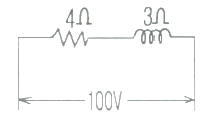
- 500
- 1200
- 1600
- 2000
(정답률: 56%)
22. 지시전기계기의 일반적인 구성요소가 아닌 것은?
- 가열장치
- 구동장치
- 제어장치
- 제동장치
(정답률: 75%)
23. 전기기기의 철심을 규소강판으로 성층하는 가장 주된 이유는?
- 히스테리시스손의 감소
- 와류선의 감소
- 동손의 감소
- 철손의 감소
(정답률: 67%)
24. 저항 R, 인덕턴스 L, 정전용량 C인 직렬회로의 공진주파수를 표시하는 식은?
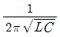
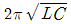
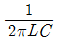
- 2πLC
(정답률: 75%)
25. 정전용량 2μF의 콘덴서를 직류 3000V 로 충전할 때 이것에 축적되는 에너지는 몇 J 인가?
- 6
- 9
- 12
- 18
(정답률: 67%)
26. 실리콘 다이오드를 쓰는 정류기의 특성이 아닌 것은?
- 전류 밀도가 크다.
- 온도에 의한 영향이 작다.
- 효율이 높다.
- 소용량 정류기로만 쓸 수 있다.
(정답률: 77%)
27. OFF 상태에서 ON 상태로, 또는 ON 상태에서 OFF 상태로 스위칭 할 수 있는 3개 또는 그 이상의 접합을 갖는 PNPN 구조로 된 반도체는?
- 전계효과 트랜지스터
- 사이리스터
- 터널다이오드
- 트랜지스터
(정답률: 71%)
28. 변압기 결선에서 제3고조파의 영향을 가장 많이 받는 것은?
- Y-△ 결선
- △-Y 결선
- Y-Y 결선
- △-△ 결선
(정답률: 78%)
29. 다음과 같은 변압기의 유도 결합회로에서 발생되는 2차측 유도 전압방정식은?
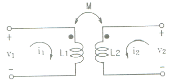
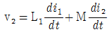
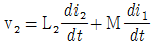
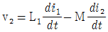
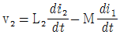
(정답률: 58%)
30. 교류발전기의 병렬 운전조건에 해당되지 않는 것은?
- 기전력의 크기(전압)가 일치하는 것
- 기전력의 주파수가 일치하는 것
- 기전력의 위상이 일치하는 것
- 발전기의 용량이 일치하는 것
(정답률: 76%)
31. 변위를 임피던스로 변환하는 변환요소가 아닌 것은?
- 가변저항기
- 용량형 변환기
- 가변저항 스프링
- 전자 코일
(정답률: 71%)
32. 그림에서 전류 i5는? (단, i1=10A, i2=20A, i3=10A, i4=10A)
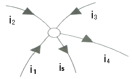
- 30
- 40
- 50
- 60
(정답률: 79%)
33. 저항 R인 검류계 G에 그림과 같이 r1인 저항을 병렬로, r2인 저항을 직렬로 접속하고 A, B 단자 사이의 저항을 R과 같게 하고 또한 G에 흐르는 전류를 전전류의 1/n로 하기 위한 r1의 값은?
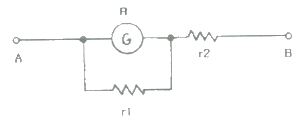
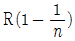
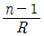
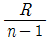
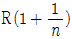
(정답률: 65%)
34. 논리식 ((1 + A) + A) + A 의 값은?
- 0
- 1
- 2
- 3
(정답률: 81%)
35. 디지털제어의 이점이 아닌 것은?
- 프로그램의 단일성
- 잡음 및 외란의 영향의 감소
- 신뢰도의 향상
- 감도의 개선
(정답률: 73%)
36. 목표값이 시간에 관계없이 항상 일정한 값을 가지는 제어는?
- 정치제어
- 추종제어
- 비율제어
- 프로그램제어
(정답률: 78%)
37. 열동 계전기(thernal relay)의 설치 목적은?
- 전동기의 과부하 보호
- 감전사고 예방
- 자기유지
- 인터록유지
(정답률: 81%)
38. 직류 출력 전압이 무부하일 때 350V, 전부하시 300V 인 경우 전압 변동률은 약 얼마인가?
- 10
- 14
- 17
- 77
(정답률: 56%)
39. 무선주파증폭에 복동조 회로를 사용할 경우 옳은 것은?
- 증폭도를 크게 높일 수가 있다.
- 왜곡을 줄일 수 있다.
- 전력 효율을 높일 수 있다.
- 선택도를 해치지 않고 대역폭을 넓게 할 수 있다.
(정답률: 61%)
40. 저항 R과 유도 리액턴스 XL이 병렬로 접속된 회로의 역률은?
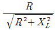
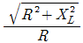
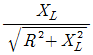
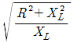
(정답률: 66%)
3과목: 소방관계법규
41. 화재경계지구로 지정할 수 있는 대상이 아닌 것은?
- 시장지역
- 소방출동로가 없는 지역
- 공장·창고가 밀집한 지역
- 콘크리트 건물이 밀집한 지역
(정답률: 78%)
42. 소방기본법상 화재경계지구 안에 소방대상물에 대한 소방특별조사를 거부한 자에 대한 벌칙기준을 옳은 것은?
- 100만원 이하의 벌금
- 200만원 이하의 벌금
- 300만원 이하의 벌금
- 400만원 이하의 벌금
(정답률: 49%)
43. 펄프공장의 작업장, 음료수 공장의 충전을 하는 작업장 등과 같이 화재안전기준을 적용하기 어려운 특정소방대상물에 설치하지 아니할 수 있는 소방시설이 아닌 것은?
- 연결송수관설비
- 스프링클러설비
- 상수도소화용수설비
- 연결살수설비
(정답률: 50%)
44. 지정수량 미만인 위험물의 저장 또는 취급기준은 무엇으로 정하는가?
- 시·도의 조례
- 총리령
- 행정자치부령
- 대통령령
(정답률: 69%)
45. 위험물안전관리법령상 제4류 위험물 인화성 액체의 품명 및 지정수량으로 옳은 것은?
- 제1석유류(수용성액체) : 100리터
- 제2석유류(수용성액체) : 500리터
- 제3석유류(수용성액체) : 1000리터
- 제4석유류 : 6000리터
(정답률: 61%)
46. 제조소에서 저장 또는 취급하는 위험물별 주의사항을 표시한 게시판으로 옳지 않은 것은?
- 제4류 위험물 : 화기주의
- 제5류 위험물 : 화기엄금
- 제2류 위험물(인화성고체 제외) : 화기주의
- 제3류 위험물 중 자연발화성물질 : 화기엄금
(정답률: 70%)
47. 전문 소방시설공사업의 등록기준 중 보조기술인력은 최소 몇 인 이상 있어야 하는가?
- 1
- 2
- 3
- 4
(정답률: 75%)
48. 간이스프링클러설비를 설치하여야 할 특정소방대상물의 기준으로 옳은 것은?
- 근린생활시설로 사용하는 부분의 바닥면적 합계가 1000m2 이상인 것은 모든 층
- 교육연구시설 내의 합숙소로서 연면적 500 m2 이상인 것
- 정신병원과 의료재활시설은 제외한 요양병원으로 사용되는 바닥면적의 합계가 300 m2 이상 600 m2 미만인 시설
- 정신의료기관 또는 의료재활시설로 사용되는 바닥면적의 합계가 600 m2 미만인 시설
(정답률: 54%)
49. 소방기본법에 규정된 내용에 관한 설명으로 옳은 것은?
- 소방대상물에는 항해 중인 선박도 포함된다.
- 관계인이란 소방대상물의 관리자와 점유자를 제외한 실제 소유자를 말한다.
- 소방대의 임무는 구조와 구급활동을 제외한 화재현장에서의 화재진압활동이다.
- 의용소방대원과 의무소방원도 소방대의 구성원이다.
(정답률: 76%)
50. 소방시설 중 소화기구 및 단독경보형감지기를 설치하여야 하는 대상으로 옳은 것은?
- 아파트
- 기숙사
- 오피스텔
- 단독주택
(정답률: 67%)
51. 감리업자가 소방공사의 감리를 완료할 때 그 감리 결과를 통보해야하는 대상자가 아닌 것은?
- 시·도지사
- 소방시설공사의 도급인
- 특정소방대상물의 관계인
- 특정소방대상물의 공사를 감리한 건축사
(정답률: 54%)
52. 화재조사를 하는 관계 공무원이 화재조사를 수행하면서 알게 된 비밀을 다른 사람에게 누설 시 벌칙기준으로 옳은 것은?
- 100만원 이하의 벌금
- 200만원 이하의 벌금
- 300만원 이하의 벌금
- 400만원 이하의 벌금
(정답률: 70%)
53. 하자보수 보증기간이 2년인 소방시설은?
- 옥내소화전설비
- 무선통신보조설비
- 자동화재탐지설비
- 물분무등소화설비
(정답률: 73%)
54. 소방대상물의 건축허가 등의 동의요구를 할 때 제출해야 할 서류로 틀린 것은?
- 소방시설 설치계획표
- 소방시설공사업등록증
- 임시소방시설 설치계획서
- 소방시설의 층별 평면도 및 층별 계통도
(정답률: 67%)
55. 형식승인을 받지 아니한 소방용품을 소방시설공사에 사용한 자에 대한 벌칙기준으로 옳은 것은?(관련규정 개정전 문제로 기존 정답은 3번이었으며 여기서는 3번을 누르면 정답 처리 됩니다. 자세한 내용은 해설을 참고하세요.)
- 7년 이하의 징역 또는 5000만원 이하의 벌금
- 5년 이하의 징역 또는 3000만원 이하의 벌금
- 3년 이하의 징역 또는 1500만원 이하의 벌금
- 1년 이하의 징역 또는 1000만원 이하의 벌금
(정답률: 76%)
56. 제1종 판매취급소에서 저장 또는 취급할 수 있는 위험물의 수량 기준으로 옳은 것은?
- 지정수량의 20배 이하
- 지정수량의 20배 이상
- 지정수량의 40배 이하
- 지정수량의 40배 이상
(정답률: 55%)
57. 원활한 소방활동을 위하여 실시하는 소방용수시설에 대한 조사결과는 몇 년간 보관하는가?
- 2년
- 3년
- 4년
- 영구
(정답률: 77%)
58. 방염성능기준 이상의 실내장식물 등을 설치하여야 하는 특정소방대상물이 아닌 것은?
- 다중이용업의 영업장
- 의료시설 중 정신의료기간
- 방송통신시설 중 방송국 및 촬영소
- 건축물 옥내에 있는 운동시설 중 수영장
(정답률: 73%)
59. 특정소방대상물 중 업무시설에 해당되지 않는 것은?
- 방송국
- 마을회관
- 주민자치센터
- 변전소
(정답률: 59%)
60. 화재예방을 위하여 불을 사용하는 설비의 관리기준 중 용접 또는 용단 작업자로부터 반경 몇 m 이내에 소화기를 갖추어야 하는가? (단, 산업안전보건법 제23조의 적용을 받는 사업장의 경우는 제외한다.)
- 1
- 3
- 5
- 7
(정답률: 62%)
4과목: 소방전기시설의 구조 및 원리
61. 공기관식 차동식분포형감지기 설치기준으로 옳은 것은?
- 검출부는 5°이상 경사되지 아니하도록 부착할 것
- 공기관의 노출부분은 감지구역마다 15m 이상이 되도록 할 것
- 검출부는 바닥으로부터 0.5m 이상 1.5m 이하의 위치에 설치할 것
- 하나의 검출부분에 접속하는 공기관의 길이는 150m 이하로 할 것
(정답률: 67%)
62. 다음 중 ( )에 들어갈 내용으로 알맞은 것은?
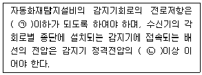
- ㉠ 50Ω, ㉡ 85%
- ㉠ 40Ω, ㉡ 80%
- ㉠ 40Ω, ㉡ 85%
- ㉠ 50Ω, ㉡ 80%
(정답률: 81%)
63. 지하구의 길이가 1000m 인 곳에 자동화재탐지설비를 설치 시 최소 경계구역 수는?(관련 규정 개정전 문제로 여기서는 기존 정답인 2번을 누르면 정답 처리됩니다. 자세한 내용은 해설을 참고하세요.)
- 1
- 2
- 3
- 4
(정답률: 66%)
64. 케이블트레이에 정온식감지선형 감지기를 설치하는 경우 케이블트레이 받침대에 무엇을 이용하여 감지선을 설치해야 하는가?
- 보조선
- 접착제
- 마감금구
- 단자부
(정답률: 69%)
65. 자동화재속보설비 속보기의 외함에 강판을 사용할 경우 외함의 최소 두께는?
- 1.2mm
- 3mm
- 6.4mm
- 7mm
(정답률: 74%)
66. 비상콘센트설비의 화재안전기준에서 규정하는 특별고압의 범위는?
- 4000V 초과
- 5000V 초과
- 6000V 초과
- 7000V 초과
(정답률: 76%)
67. 무선통신보조설비의 증폭기에 관한 설명으로 틀린 것은?
- 증폭기라 함은 2개 이상의 입력신호를 원하는 비율로 조합한 출력이 발생하도록 하는 장치를 말한다.
- 증폭기 비상전원 용량은 무선통신보조설비를 유효하게 30분 이상 작동시킬수 있는 것으로 한다.
- 증폭기 전면에는 주회로 전원이 정상인지의 여부를 표시하는 표시등 및 전압계를 설치한다.
- 전원은 전기가 정상적으로 공급되는 축전지 또는 교류전압 옥내간선으로 한다.
(정답률: 64%)
68. 누전경보기의 전원전압 정류회로에서 병렬로 연결되는 콘덴서의 용도로서 가장 적합한 것은?
- 직류전압을 평활하게 하기 위한 것이다.
- 직류전압의 온도보정용이다.
- 교류전압을 저지하기 위한 것이다.
- 정류기의 절연저항을 증가시키기 위한 것이다.
(정답률: 64%)
69. 피난기구의 설치 기준으로 틀린 것은?
- 피난기구를 설치하는 개구부는 서로 동일 직성상인 위치에 있을 것
- 완강기는 강하 시 로프가 소방대상물과 접촉하여 손상되지 아니하도록 할 것
- 미끄럼대는 안전한 강하속도를 유지하도록 하고 전락방지를 위한 안전조치를 할 것
- 구조대의 길이는 안정한 강하속도를 유지할 수 있는 길이로 할 것
(정답률: 75%)
70. 비상방송설비에 사용하는 확성기는 각 층마다 설치하되 그 층의 각 부분으로부터 하나의 확성기까지 수평거리가 몇 m 이하가 되도록 설치하는가?
- 15
- 25
- 30
- 45
(정답률: 76%)
71. 비상방송설비에서 기동장치에 따른 화재신고를 수신한 후 필요한 음량으로 화재발생 상황 및 피난에 유효한 방송이 자동으로 개시될 때까지의 소요시간은?
- 5초 이하
- 10초 이하
- 15초 이하
- 20초 이하
(정답률: 79%)
72. 3선식 배선으로 상시 충전되는 유도등의 전기회로에 점멸기를 설치하는 경우에 유도등이 점등되어야 할 때가 아닌 것은?
- 자동화재탐지설비의 감지기 또는 발신기가 작동한 때
- 비상경보설비의 발신기가 작동한 때
- 방재업무를 통제하는 곳 또는 전기실의 배전반에서 수동으로 점등하는 때
- 옥내소화전설비가 작동되는 때
(정답률: 55%)
73. 복도에 비상조명등을 설치한 경우 휴대용 비상조명등을 설치하지 아니할 수 있는 시설은?
- 아파트
- 숙박시설
- 근린생활시설
- 다중이용업소
(정답률: 48%)
74. 누전경보기의 부품 중 전압 지시전기계기의 최대눈금은 사용하는 회로의 정격전압의 몇 % 이상 몇 % 이하여야 하는가?
- 110 ~ 125%
- 120 ~ 140%
- 130 ~ 150%
- 140 ~ 200%
(정답률: 64%)
75. 공연장 및 집회장에 설치해야 할 유도등 및 유도표지의 종류에 해당하지 않는 것은?
- 객석유도등
- 통로유도등
- 피난구유도표지
- 대형피난구유도등
(정답률: 52%)
76. 열반도체식 감지기의 구성요소가 아닌 것은?
- 수열판
- 다이어프램
- 미터릴레이
- 열반도체소자
(정답률: 63%)
77. 무선통신보조설비의 누설동축케이블은 금속제 또는 자기제 등의 지지금구를 이용하여 벽·천장 등에 몇 m 이내마다 고정시켜야 하는가? (단, 불연재료로 구획된 반자 안에 설치하는 경우는 제외함)
- 4
- 6
- 8
- 10
(정답률: 58%)
78. 누전경보기 배선용 차단기의 전류용량은 몇 A 이하의 것으로 하여야 하는가?
- 15
- 20
- 40
- 60
(정답률: 60%)
79. 비상전원수전설비에서 옥외에 설치하는 큐비클형의 경우 외함에 노출하여 설치할 수 없는 것은?
- 환기장치
- 퓨즈 등으로 보호한 전압계
- 전선의 인입구 및 인출구
- 불연성 재료로 덮개를 설치한 표시등
(정답률: 61%)
80. 비상콘센트설비의 전원부와 외함 사이의 절연저항 측정기준으로 옳은 것은?
- 250 V 절연저항계로 측정할 때 10 MΩ 이상일 것
- 250 V 절연저항계로 측정할 때 20 MΩ 이상일 것
- 500 V 절연저항계로 측정할 때 10 MΩ 이상일 것
- 500 V 절연저항계로 측정할 때 20 MΩ 이상일 것
(정답률: 69%)